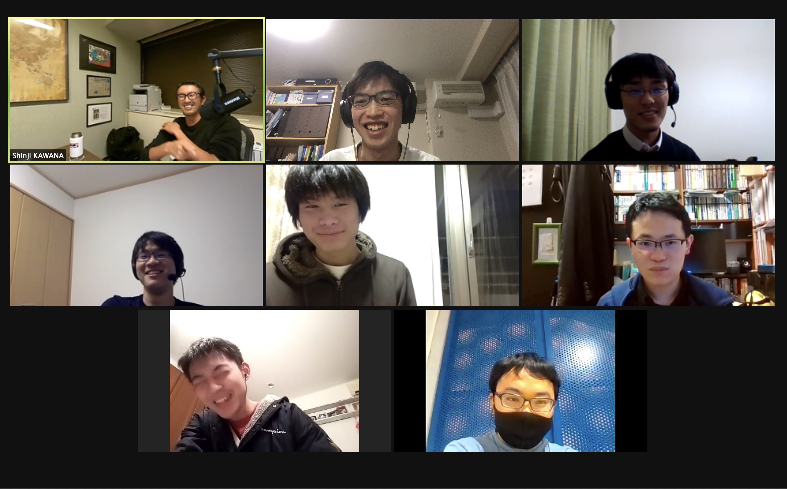

ゼミ概要
ようこそ、東京工業大学 国際関係論ゼミ 公式ホームページへ！
当ゼミは、社会の興味ある事例について研究しているゼミです。
社会科学的方法論をもとに、社会の事例を研究してみませんか？
お知らせ
*1Q初回について
1Q初回は、4/13(水)に西9号館910号室で実施します。
前半は簡単なガイダンスを行い、スケジュール・輪読書を決定します。
後半には、M2による研究成果報告を行います。
活動について
新規お知らせ
2020.04.08 1Q初回の情報を公開しました。
2021.04.08 1Qの予定を更新しました。
2021.07.25 3Qの予定を更新しました。
2021.07.25 夏休みの予定を公開しました。
2021.05.12 1Qの予定を更新しました。
2021.04.14 1Qの予定を更新しました。
2020.10.21 3Qの予定を更新しました。
2020.07.04 輪読会のレジュメを公開しました。
2020.07.01 過去の論文を公開しました。
2020.06.24 2Qに扱う本を変更しました。
2020.06.22 ゼミ長あいさつを更新しました。
2020.06.21 2Q初回ガイダンスの情報を公開しました。
2020.06.21 教員紹介：一言を公開しました
2020.06.21 個人の研究を更新しました。
2020.06.17 個人の研究を更新しました。
2020.06.17 ゼミ長あいさつを公開しました。
2020.06.17 教員紹介を更新しました。
2020.06.17 過去の論文を公開しました。
2020.06.17 本日の報告会の資料を公開しました。
2020.06.17 国際関係論ゼミ公式HPを開設しました。
2021.04.08 1Qの予定を更新しました。
2021.07.25 3Qの予定を更新しました。
2021.07.25 夏休みの予定を公開しました。
2021.05.12 1Qの予定を更新しました。
2021.04.14 1Qの予定を更新しました。
2020.10.21 3Qの予定を更新しました。
2020.07.04 輪読会のレジュメを公開しました。
2020.07.01 過去の論文を公開しました。
2020.06.24 2Qに扱う本を変更しました。
2020.06.22 ゼミ長あいさつを更新しました。
2020.06.21 2Q初回ガイダンスの情報を公開しました。
2020.06.21 教員紹介：一言を公開しました
2020.06.21 個人の研究を更新しました。
2020.06.17 個人の研究を更新しました。
2020.06.17 ゼミ長あいさつを公開しました。
2020.06.17 教員紹介を更新しました。
2020.06.17 過去の論文を公開しました。
2020.06.17 本日の報告会の資料を公開しました。
2020.06.17 国際関係論ゼミ公式HPを開設しました。
お問い合わせ
参加希望やご質問等の連絡は、当ゼミ公式Twitter(@KawanaZemi)にDMを送っていただくか、
kawanazemi.kouhou[at]gmail.com([at]→@)までお寄せください。